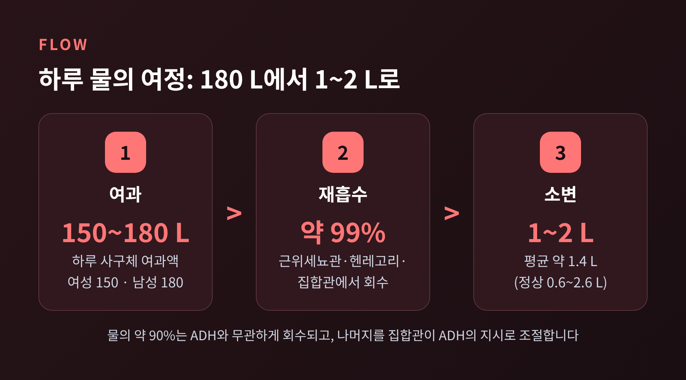
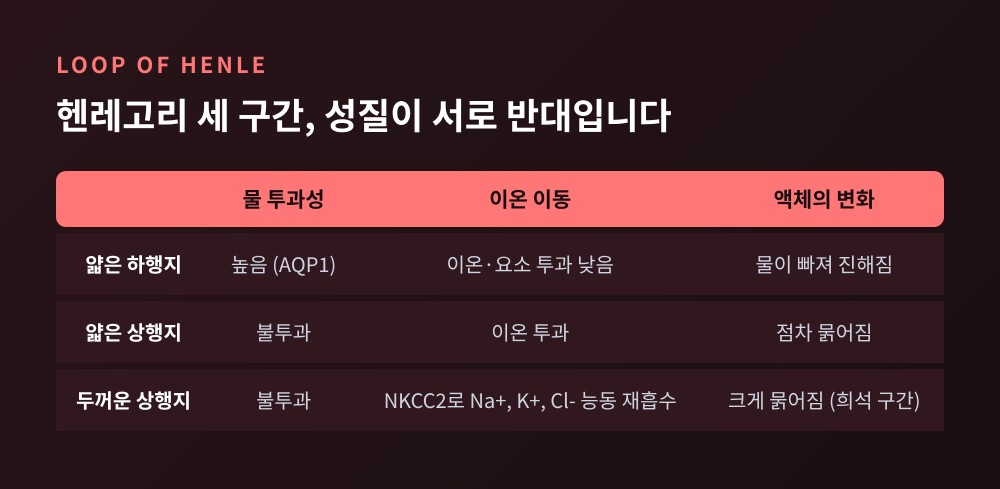
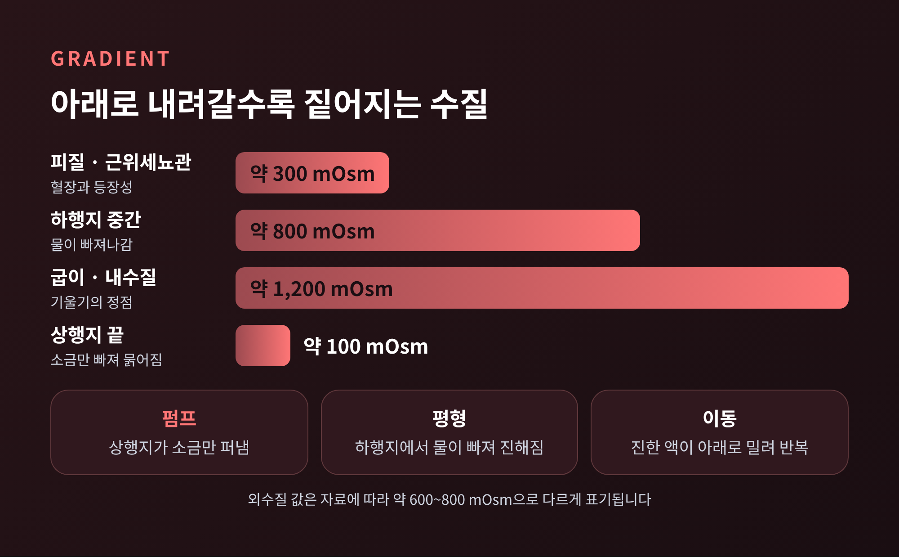
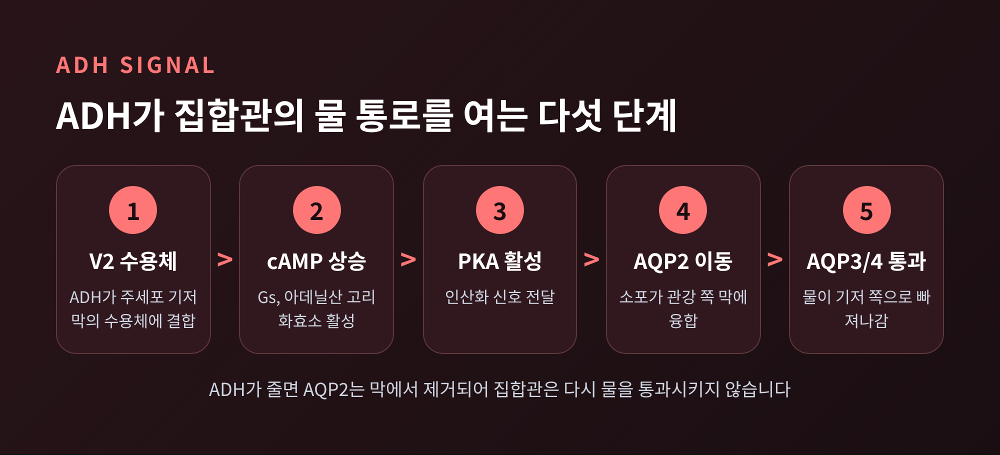
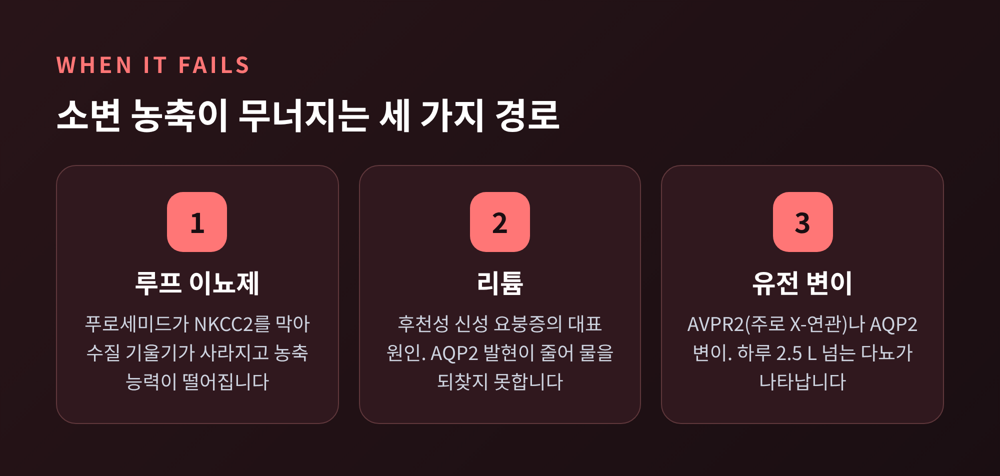

소변 농축 원리: 헨레고리의 대향류 교환과 ADH가 물을 되찾는 방식

[바이오] 신장은 하루 150~180 L를 걸러 내고, 그중 1~2 L만 소변으로 내보냅니다.
이번 글에서는 신장이 어떻게 물을 되찾는지 정리해 보겠습니다. 핵심은 두 가지입니다. 헨레고리가 수질에 짠 농도 기울기를 만들고, 호르몬 ADH가 집합관의 물 통로를 여닫습니다.
■ 하루 180 L를 걸러 1~2 L만 내보냅니다
사구체여과율은 평균 남성 약 125 mL/분, 여성 약 105 mL/분입니다. 하루로 환산하면 여과액이 남성 약 180 L, 여성 약 150 L에 달합니다. 욕조 한 개를 훌쩍 넘는 양입니다.
이 가운데 99% 안팎이 혈액으로 되돌아갑니다. 실제 소변은 성인 평균 약 1.4 L, 정상 범위로는 0.6~2.6 L 정도입니다. 소변의 91~96%는 물이고, 고형분 가운데 절반 이상은 요소입니다.
재흡수는 단계별로 이루어집니다. 근위세뇨관에서 나트륨과 칼륨의 약 65%가 돌아오고, 물은 용질을 따라 삼투 방식으로 함께 따라갑니다. 헨레고리는 이온의 약 25%와 물의 약 20%를 맡습니다. 한 총설(Boone와 Deen, 2008)은 여과액 물의 약 90%가 근위세뇨관과 하행 헨레고리에서 호르몬과 무관하게 회수된다고 정리합니다. 나머지를 집합관이 ADH의 지시에 따라 처리합니다.

물이 얼마나 돌아올지는 결국 집합관에서 정해집니다. 그런데 집합관이 물을 빼앗으려면 바깥쪽, 즉 수질이 충분히 진해야 합니다. 그 진한 환경을 만드는 곳이 헨레고리입니다.
■ 헨레고리, 구간마다 역할이 다릅니다
헨레고리는 독일 해부학자 프리드리히 헨레의 이름에서 온 이름입니다. 근위세뇨관에서 원위세뇨관으로 이어지는 머리핀 모양의 관입니다. 하는 일은 하나로 요약됩니다. 신수질에 농도 기울기를 만드는 것입니다.
구간별 성질이 서로 반대라는 점이 중요합니다.

얇은 하행지는 물을 잘 통과시킵니다. 아쿠아포린 1 덕분이며, 이온과 요소는 잘 통과시키지 않습니다. 물이 빠져나가니 안쪽 액체는 점점 진해집니다.
두꺼운 상행지는 정반대입니다. 물은 통과시키지 않고, NKCC2라는 공동수송체로 나트륨, 칼륨, 염소를 간질로 퍼냅니다. 이 구간을 흔히 희석 구간이라 부르는 이유가 여기에 있습니다. 소금은 빠져나가는데 물은 남으니, 관 속 액체가 묽어집니다.
■ 대향류 증폭, 작은 차이를 쌓아 큰 기울기로
두꺼운 상행지가 소금을 퍼내는 일을 단일 효과라고 부릅니다. 한 번의 효과는 작습니다. 그러나 관이 머리핀처럼 꺾여 있어, 이 효과가 반복해서 쌓입니다.
과정은 이렇습니다. 상행지가 소금을 내보내 간질이 진해집니다. 그러면 물 투과성이 높은 하행지에서 물이 빠져나가 하행지 액체도 진해집니다. 진해진 액체가 굽이를 돌아 상행지로 올라오면, 더 많은 소금이 간질로 나갑니다. 이 순환이 거듭될수록 아래쪽으로 갈수록 농도가 높아집니다.

수치로 보면 한눈에 들어옵니다. 근위세뇨관을 나온 액체는 혈장과 같은 약 300 mOsm입니다. 하행지를 내려가며 약 800, 굽이에서는 약 1,200 mOsm까지 오릅니다. 상행지를 올라가면서는 반대로 묽어져 끝부분에서 100~150 mOsm 안팎이 됩니다. 수질 간질도 바깥쪽 약 600~800에서 안쪽 약 1,200 mOsm으로 짙어집니다. 외수질 값은 자료마다 600과 800으로 달라 범위로 적었습니다.
루프의 길이는 농축 능력과 직결됩니다. 사람의 루프는 약 2.2 mm이고 소변은 최대 약 1,400 mOsm까지 농축됩니다. 낙타는 약 4.1 mm에 약 2,800 mOsm, 오스트레일리아의 한 설치류는 약 5.2 mm에 약 9,000 mOsm에 이른다고 보고됩니다. 사막 동물이 긴 루프를 가진 이유가 읽힙니다. 반대로 비버처럼 물이 풍부한 환경의 동물은 루프가 짧습니다. 캥거루쥐는 하행지가 길고 아쿠아포린 1이 풍부해, 씨앗의 대사수만으로 살며 따로 물을 마시지 않아도 됩니다.
■ 직형혈관과 요소, 기울기를 지키고 키웁니다
기울기를 만들었다고 끝이 아닙니다. 수질에 혈관이 지나가면 그 소금을 혈액이 쓸어 가 버릴 수 있습니다. 이를 막는 구조가 직형혈관입니다.
직형혈관도 헨레고리처럼 머리핀 모양으로 나란히 달립니다. 내려가는 혈액은 소금을 받아들이고 물을 내놓습니다. 올라오는 혈액은 반대로 소금을 내놓고 물을 되가져옵니다. 여기에 혈류가 매우 느려, 수질의 농도가 혈액에 씻겨 나가지 않습니다. 이것이 대향류 교환입니다. 증폭이 기울기를 만드는 쪽이라면, 교환은 그 기울기를 보존하는 쪽입니다.
요소도 한몫합니다. 근위 집합관은 물은 통과시키지만 요소는 통과시키지 않아, 물이 빠지면서 관 속 요소가 진해집니다. 더 깊은 내수질 집합관은 요소를 통과시키므로 요소가 간질로 나와 다시 순환합니다. ADH는 이 집합관의 요소 투과성도 높입니다. 마우스 실험에서 요소 수송체 UT-A1/3를 없애자 평상시 소변 삼투농도가 약 70% 줄었고, 이틀 동안 수분을 제한해도 소변을 농축하지 못했습니다. 사람의 수치는 아니지만 요소의 비중을 가늠하게 합니다.
■ ADH가 집합관의 물 통로를 엽니다
간질이 짙어졌어도 집합관이 물을 내주지 않으면 소용이 없습니다. 집합관의 물 투과성을 정하는 것이 바소프레신, 곧 ADH입니다.
ADH는 시상하부의 시삭상핵과 실방핵에서 만들어져 뇌하수체 후엽에 저장되었다가, 주로 혈장 삼투농도가 오를 때 분비됩니다. 목이 마를 때 몸이 보내는 신호의 소변 쪽 버전입니다.

경로는 다섯 단계입니다. 먼저 ADH가 집합관 주세포 기저막의 V2 수용체에 붙습니다. 그러면 아데닐산 고리화효소가 켜져 cAMP가 오르고, PKA가 활성화됩니다. 이어 AQP2를 품은 소포가 관강 쪽 막으로 이동해 융합하고, 그 막이 비로소 물을 통과시킵니다. 물은 세포를 지나 기저 쪽의 AQP3, AQP4를 통해 진한 간질로 빠져나갑니다.
AQP2는 바소프레신이 조절하는 유일한 아쿠아포린입니다. 분 단위의 단기 조절은 소포 이동이, 일 단위의 장기 조절은 AQP2 유전자 발현 증가가 맡습니다. ADH가 줄면 AQP2는 막에서 제거되고 집합관은 다시 물을 통과시키지 않게 됩니다. 스위치가 완전히 되돌려지는 구조입니다.
물 분자 하나가 지나가는 속도도 놀랍습니다. 1992년 피터 에이그리 연구팀이 처음 보고한 AQP1은 단량체 하나가 초당 약 10억 개의 물 분자를 통과시킵니다. 이 발견으로 에이그리는 2003년 노벨 화학상을 받았습니다. 그러면서도 양성자는 막습니다.
■ 이 체계가 무너질 때
원리를 알면 고장 난 경우도 보입니다.

푸로세미드 같은 루프 이뇨제는 두꺼운 상행지의 NKCC2를 막습니다. 단일 효과가 멈추니 수질의 농도 기울기가 사라지고, 소변 농축 능력도 떨어집니다. 경구는 30~60분, 정맥은 약 5분 안에 효과가 나타납니다.
신성 요붕증은 집합관이 ADH에 반응하지 못하는 병입니다. 원인은 V2 수용체 유전자(AVPR2)나 AQP2 유전자의 변이, 혹은 후천적 요인입니다. 성인에서는 리튬 독성과 고칼슘혈증이 대표적입니다. 소변량이 하루 2.5 L를 넘는 다뇨가 나타나고, 혈장 삼투농도는 오르며 소변 삼투농도는 낮아집니다. 데스모프레신을 투여했을 때 소변이 진해지면 중추성, 반응이 없으면 신성일 가능성이 큽니다. 치료는 충분한 수분 섭취와 원인 교정이 기본이고, 1차 약제로 하이드로클로로티아지드와 아밀로라이드가 쓰입니다.
한계도 분명히 적어 둡니다. 위에서 인용한 요소 수송체 수치는 마우스 실험이고, 외수질 삼투농도와 사람의 최대 소변 농도는 자료마다 조금씩 달랐습니다. 단일 효과의 크기처럼 이번 조사에서 확인하지 못한 수치는 글에 넣지 않았습니다.
정리하면 이렇습니다.
신장은 물을 직접 끌어당기지 못합니다. 대신 헨레고리가 소금으로 진한 환경을 만들고, 직형혈관이 그 환경을 지키며, ADH가 집합관의 문을 열어 물이 따라 나오게 합니다.
"물은 소금을 따라간다." 이 한 줄이 소변 농축의 전부라고 해도 과장이 아닙니다.
예전에는 하루 1~2 L의 소변이 그저 남은 것이라고 여겼다면, 이제는 180 L에서 정교하게 골라낸 결과로 보입니다. 오늘 마신 물 한 잔이 어디로 돌아갈지, 신장은 이미 알고 있었을 것입니다.